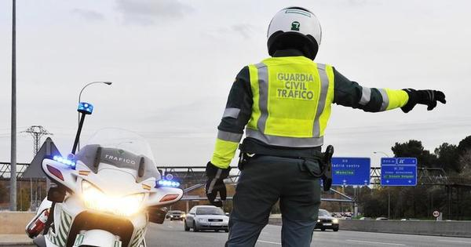

La Guardia Civil se incauta de casi una tonelada de cocaína en el puerto de Algeciras
La Guardia Civil, en el marco de la operación Culmen, ha detenido a 10 personas pertenecientes a una organización criminal dedicada al tráfico de drogas, informa el instituto armado en un comunicado. En la operación se han intervenido un total de 911 kilogramos de cocaína que se encontraban ocultos en un doble fondo practicado en un camión de gran tonelaje y en el interior de un contenedor de transporte de mercancías marítimas.

La investigación se inició cuando los agentes tuvieron conocimiento de la existencia de una organización
criminal asentada en la zona del Campo de Gibraltar que estaba dedicándose a facilitar la extracción
de grandes cargamentos de cocaína en el recinto portuario de Algeciras. La droga procedente de
Sudamérica llegaba oculta en contenedores que transportaban frutas tropicales. Dos de los detenidos
eran trabajadores del citado recinto portuario, lo que facilitaba la extracción de la droga y
localización de los contenedores que transportaban la cocaína. El modus operandi utilizado era
el conocido como gancho ciego, es decir, la droga llegaba oculta en mochilas de deporte entre
la mercancía, se fracturaban los precintos originales y extraían la droga. Posteriormente la
organización volvía a precintar el contenedor con precintos falsificados que poseían. Una vez
extraída la cocaína, dos camioneros introducían en la zona portuaria dos camiones y dos remolques
de empresas que habitualmente trabajan en el puerto de Algeciras y que tenían practicados dobles
fondos con varias personas en el interior para proceder a recoger la droga. Continuando con las
investigaciones, el pasado mes de abril, los agentes procedieron a realizar la fase de explotación
de la operación cuando miembros de la organización se disponía a sacar un cargamento de droga
que había llegado a puerto.Por tal motivo, se estableció un dispositivo de vigilancia que dio
sus frutos cuando los guardias civiles localizaron dos camiones y un contenedor de mercancías
que estaban siendo utilizados por miembros de la organización criminal.
En el interior del contenedor hallaron 474 kilogramos de cocaína distribuida en pastillas de
un kilo aproximadamente. Bajo las bateas de ambos camiones se encontraron sendos dobles fondos
que habían construido al efecto. En uno de ellos se encontraban ocultos 437 kilogramos de cocaína
y en el otro se escondían seis individuos, dos de los ellos vistiendo uniformes de estibador,
mientras los otros lo hacían con ropas oscuras para no ser vistos. Estos individuos, que fueron
detenidos, eran los encargados de la extracción de la droga del recito portuario. De igual manera
se procedió a la detención de ambos conductores de los tráiler y de un acompañante que iba en
la cabina de uno de los vehículos, todos ellos pertenecientes a la organización criminal. Nueve
de los detenidos son de nacionalidad española y una de nacionalidad rumana.Todos ellos han ingresado
en prisión por orden de la Autoridad Judicial.En la operación han participado agentes pertenecientes
a las Comandancias de la Guardia Civil de Algeciras y Málaga.